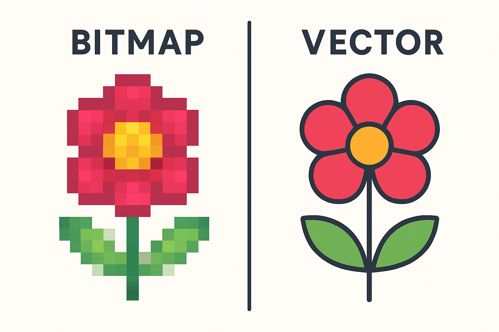

Wat is compressie?
Compressie betekent dat een bestand kleiner wordt gemaakt. Hierdoor neemt het minder opslagruimte in. Dit wordt bijvoorbeeld gebruikt bij foto's en video's.
Bitmap
Een afbeeding die is opgebouwd uit pixels noem je een bitmapafbeelding. Zo'n afbeelding kost veel opslagruimte en als je inzoomt worden de losse pixels zichtbaar en is de afbeelding niet meer scherp.
Vector
Een vectorafbeelding bestaat uit lijnen en vormen die met berekeningen worden gemaakt. Hierdoor kun je de afbeelding groter of kleiner maken zonder dat] deze onscherp wordt. Logo's worden vaak als vector opgeslagen.
Bitmap wordt dus vaak gebruikt voor foto's en vector vooral voor logo's en tekeningen.
Samenvatting van het filmpje
Compressie zorgt ervoor dat bestanden minder ruimte innemen. Bij afbeeldingen is er verschil tussen bitmap en vector. Een bitmap bestaat uit pixels en kan bij vergroting onscherp worden. Een vector bestaat uit lijnen en vormen en blijft scherp wanneer de afbeelding groter wordt gemaakt.
